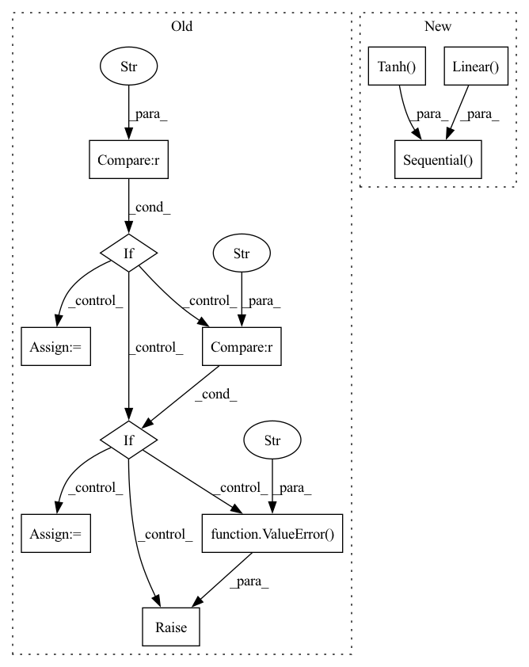

Pattern ID :6231

Before Change
self.negative_weight = config["negative_weight"]
self.gamma = config["gamma"]
neg_num_dict = config["neg_sampling"]
if "uniform" in neg_num_dict:
self.neg_seq_len = neg_num_dict["uniform"]
elif "popularity" in neg_num_dict:
self.neg_seq_len = neg_num_dict["popularity"]
else:
raise ValueError("neg_sampling must be uniform or popularity")
self.reg_weight = config["reg_weight"]
// Get user transaction history
self.history_item_id, _, self.history_item_len = dataset.history_item_matrix()
After Change
self.UI_map = nn.Linear(self.embedding_size,
self.embedding_size, bias=False)
if self.aggregator in ["user_attention", "self_attention"]:
self.W_k = nn.Sequential(nn.Linear(self.embedding_size, self.embedding_size),
nn.Tanh())
if self.aggregator == "self_attention":
self.W_q = nn.Linear(self.embedding_size, 1, bias=False)
// dropout
self.dropout = nn.Dropout(0.1)
In pattern: SUPERPATTERN
Frequency: 3
Non-data size: 11
Instances
Fragment ID: 21644682
Project Name: rucaibox/recbole
Commit Name: 283d4a486cc57cae7a4680e08c29c9302f307a0e
Time: 2022-05-07
Author: 18697951462@qq.com
File Name: recbole/model/general_recommender/simplex.py
M Class Name: SimpleX
N Class Name: SimpleX
M Method Name: __init__(3)
N Method Name: __init__(3)
M Parent Class: GeneralRecommender
N Parent Class: GeneralRecommender
M File Name: recbole/model/general_recommender/simplex.py
N File Name: recbole/model/general_recommender/simplex.py
M Start Line: 47
M End Line: 57
N Start Line: 43
N End Line: 71
'>
Before Change
if spk_embed_dim is None:
dec_idim = eunits
elif spk_embed_integration_type == "concat":
dec_idim = eunits + spk_embed_dim
elif spk_embed_integration_type == "add":
dec_idim = eunits
self.projection = torch.nn.Linear(self.spk_embed_dim, eunits)
else:
raise ValueError(f"{spk_embed_integration_type} is not supported.")
if atype == "location":
att = AttLoc(dec_idim, dunits, adim, aconv_chans, aconv_filts)
elif atype == "forward":
After Change
padding_idx=padding_idx, )
if spk_embed_dim is not None:
self.projection = torch.nn.Sequential(torch.nn.Linear(eunits + spk_embed_dim, eunits),
torch.nn.Tanh(),
torch.nn.Linear(eunits, eunits))
dec_idim = eunits
if atype == "location":
att = AttLoc(dec_idim, dunits, adim, aconv_chans, aconv_filts)
'>
Fragment ID: 21644683
Project Name: digitalphonetics/ims-toucan
Commit Name: a90b6475ad86b161a101abe3ed1ef4c2bcf925b5
Time: 2021-09-24
Author: florian.lux@ims.uni-stuttgart.de
File Name: InferenceInterfaces/InferenceArchitectures/InferenceTacotron2.py
M Class Name: Tacotron2
N Class Name: Tacotron2
M Method Name: __init__(38)
N Method Name: __init__(39)
M Parent Class: torch.nn.Module
N Parent Class: torch.nn.Module
M File Name: InferenceInterfaces/InferenceArchitectures/InferenceTacotron2.py
N File Name: InferenceInterfaces/InferenceArchitectures/InferenceTacotron2.py
M Start Line: 46
M End Line: 107
N Start Line: 96
N End Line: 99
'>
Before Change
if spk_embed_dim is None:
dec_idim = eunits
elif spk_embed_integration_type == "concat":
dec_idim = eunits + spk_embed_dim
elif spk_embed_integration_type == "add":
dec_idim = eunits
self.projection = torch.nn.Linear(self.spk_embed_dim, eunits)
else:
raise ValueError(f"{spk_embed_integration_type} is not supported.")
if atype == "location":
att = AttLoc(dec_idim, dunits, adim, aconv_chans, aconv_filts)
elif atype == "forward":
After Change
dropout_rate=dropout_rate)
if spk_embed_dim is not None:
self.projection = torch.nn.Sequential(torch.nn.Linear(eunits + spk_embed_dim, eunits),
torch.nn.Tanh(),
torch.nn.Linear(eunits, eunits))
dec_idim = eunits
if atype == "location":
att = AttLoc(dec_idim, dunits, adim, aconv_chans, aconv_filts)
'>
Fragment ID: 21644684
Project Name: digitalphonetics/ims-toucan
Commit Name: 1adfce3a2d99089f295ed62e2becd4a51e6b441a
Time: 2021-09-23
Author: florian.lux@ims.uni-stuttgart.de
File Name: TrainingInterfaces/Text_to_Spectrogram/Tacotron2/Tacotron2.py
M Class Name: Tacotron2
N Class Name: Tacotron2
M Method Name: __init__(44)
N Method Name: __init__(45)
M Parent Class: torch.nn.Module
N Parent Class: torch.nn.Module
M File Name: TrainingInterfaces/Text_to_Spectrogram/Tacotron2/Tacotron2.py
N File Name: TrainingInterfaces/Text_to_Spectrogram/Tacotron2/Tacotron2.py
M Start Line: 59
M End Line: 130
N Start Line: 120
N End Line: 123